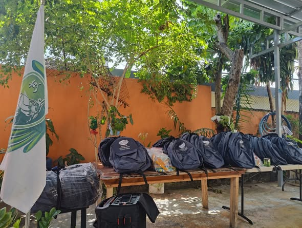
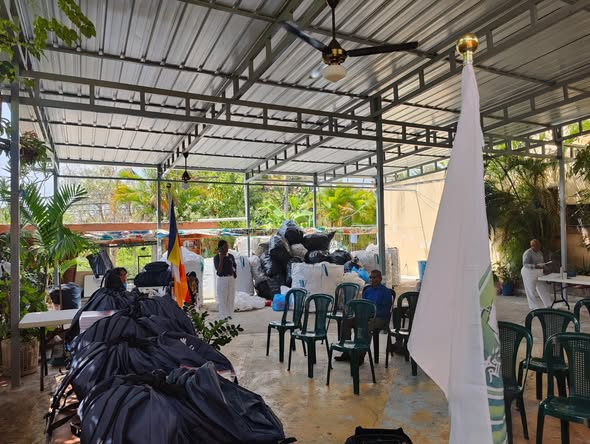
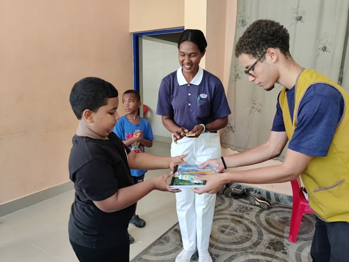
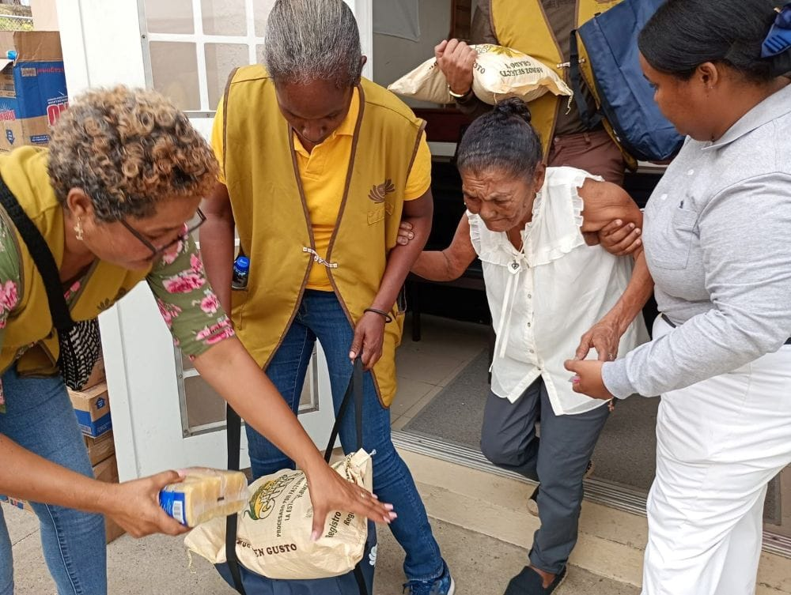
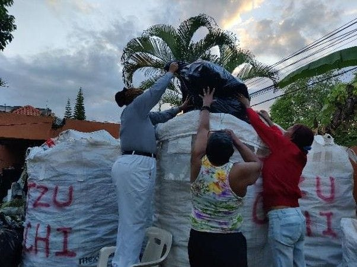
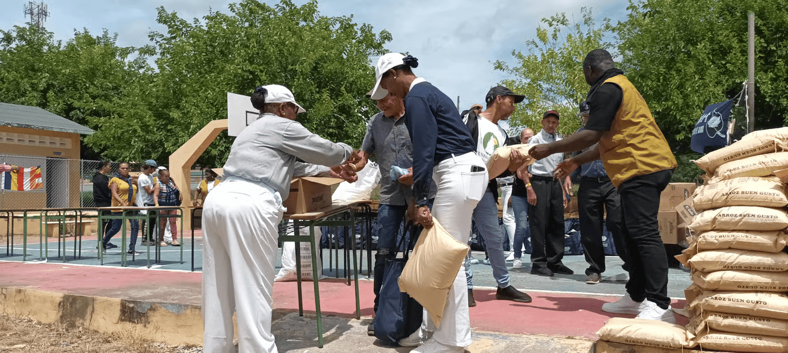

Sembrando compasión, transformando vidas.
En Tzu Chi RD servimos a nuestras comunidades con compasión, amor y acción humanitaria.
Quiénes Somos
Fundada sobre los principios de sinceridad, integridad, confianza y honestidad, la Fundación Budista Tzu Chi es una organización humanitaria internacional dedicada a aliviar el sufrimiento en todo el mundo.
Conoce más
Qué Hacemos
Caridad
Asistencia directa a familias y comunidades vulnerables.
Medicina
Atención médica gratuita y jornadas de salud preventivas.
Educación
Fomentando valores y brindando oportunidades educativas.
Ayuda Humanitaria
Respuesta integral a las necesidades humanas fundamentales.
Socorro
Asistencia inmediata y reconstrucción en zonas de desastre.
Medio Ambiente
Protección del planeta a través del reciclaje y la educación.
Cultura
Promoviendo la paz y la armonía social a través del humanismo.
Voluntariado
Movilizando el amor compasivo en las comunidades locales.
Nuestros Valores
Gratitud
Respeto
Amor
Compasión
Servicio
Nuestra Historia en RD
1998
Llegada inicial en respuesta al Huracán Georges, marcando el inicio de la misión de Tzu Chi en la República Dominicana.
2000
Inauguración de la Escuela Tzu Chi en La Romana, brindando educación de calidad a cientos de niños de escasos recursos.
Hoy
Continuamos expandiendo nuestro impacto a través de programas de salud, educación, reciclaje y ayuda comunitaria en todo el país.
Eventos Recientes
Ver todos
Inducción para Nuevos Voluntarios
Una jornada especial en Sabana Grande de Boyá para nuevos voluntarios que desean comenzar su camino de servicio con Tzu Chi.

Taller del Club de Docentes Tzu Chi RD
Primer taller de capacitación del Club de Docentes Tzu Chi RD, enfocado en fortalecer a quienes educan y acompañan a las nuevas generaciones.

Tzu Chi lleva amor y solidaridad a Sabana de la Mar
Una jornada de ayuda y solidaridad llevó el apoyo de Tzu Chi a familias de Sabana de la Mar.
Noticias e Historias

Adultos mayores impulsan el cambio ambiental en Rivera
En Rivera, Santo Domingo, cientos de adultos mayores han convertido el reciclaje en una forma de proteger su comunidad, apoyar a otras personas y fortalecer los lazos entre vecinos.

El reciclaje transforma la comunidad de Rivera
9 marzo, 2026Educación que transforma vidas en La Romana
29 mayo, 2025
Tzu Chi lleva salud y alimentos a Manabao
14 agosto, 2025Nuestro Impacto
Tu tiempo puede transformar una vida
Únete a nuestra red de compasión. Cada pequeño esfuerzo cuenta cuando se suma al de miles de corazones dispuestos a servir.
Convertirme en VoluntarioTu donación puede convertirse en esperanza
Con tu aporte económico nos ayudas a llevar alimentos, medicinas, educación y socorro a quienes más lo necesitan en la República Dominicana.
Hacer una DonaciónContáctenos
Calle La Plaza No 3, Renacimiento
(Cerca de Ministerio de Defensa), Santo Domingo
809-530-0972
fundaciontzuchidominicana@gmail.com